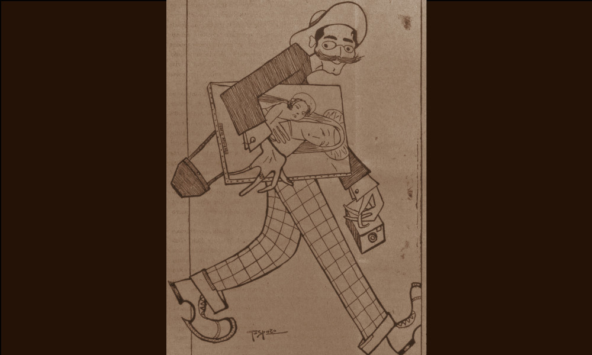

Salvadori Antonio

- Dati biografici
- Albero familiare
- Luoghi
- Opere trattate
L’antiquario Antonio Salvadori, di cui non si conoscono le date di nascita e morte, fu attivo a
Venezia tra il primo e il secondo decennio del Novecento. Pochissime sono le notizie in merito alla
sua attività che si focalizzano solo su due importanti episodi: il primo lo vide coinvolto in un
tentativo di dispersione del patrimonio artistico veneto; l’altro, all’opposto, protagonista di un
recupero virtuoso.
Nel 1906 Antonio Salvadori acquistò da Angelo Duodo, l’ultimo proprietario di Villa Tiepolo a
Zianigo, gli affreschi ‘privati’ che Gian Domenico realizzò per tutta la sua vita negli ambienti della
residenza di famiglia. Li fece staccare dal restauratore Franco Steffanoni con l’intenzione di venderli
in Francia di lì a poco. La vendita fu però bloccata dallo Stato italiano che acquisì gli affreschi già nel
1908, destinandoli a Ca’ Rezzonico, dove ancora si trovano.
L’esempio di recupero in cui fu coinvolto è riportato in un sagace articolo apparso su L’Antiquario
nel giugno 1909. Dopo aver indetto una sottoscrizione per il ritrovamento della cosiddetta
Madonna dell’Orto di Giovanni Bellini rubata poco tempo prima, Salvadori riuscì a entrare in
contatto con il ladro fingendosi un misterioso compratore inglese interessato al dipinto. Convintolo
a mostrargli il quadro, organizzò un incontro presso l’Hotel Danieli di Venezia. Salvadori uscì
dall’albergo con il Giovanni Bellini sotto il braccio: così lo ritrae la caricatura pubblicata su
L’Antiquario. Anche grazie al mercante veneziano, dunque, fu recuperata la preziosa tavoletta poi
nuovamente rubata nel 1993 e mai più riapparsa.
Salvadori fu attivo certamente fino al 1919, anno in cui è documentata una vendita organizzata con
la Galleria Geri di Milano riguardante le
collezioni Antonio dal Zotto e Giuseppe Piccoli.
Vedi le opere transitate presso l'antiquario presenti nel catalogo della Fondazione Zeri